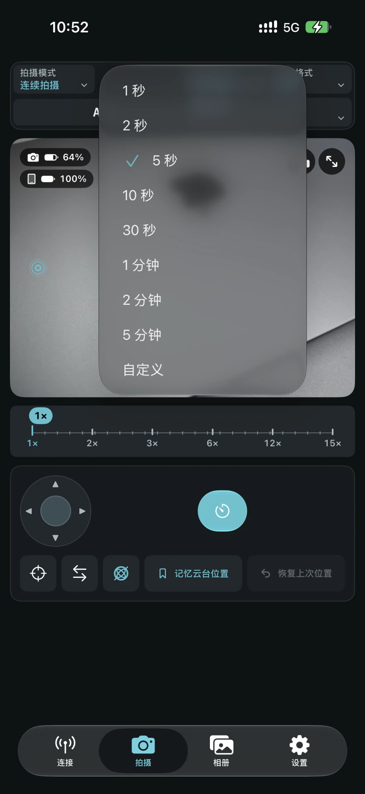

LunaScope
更细致地操控 Luna 相机More control for your Luna camera
用 iPhone 或 iPad 操控影石 Insta360 Luna Ultra 和 Luna Pro。记住云台位置，设定连拍间隔，随时套用常用拍摄参数。锁屏时也能看到实时活动。 Control your Insta360 Luna Ultra or Luna Pro from your iPhone or iPad. Recall a gimbal position, shoot at a set interval, apply capture presets and check status on the Lock Screen.
Luna 相机控制功能Luna camera controls

云台位置记忆Gimbal position recall
一边实时取景，一边用摇杆调整水平和俯仰角度。记住当前云台位置，之后恢复上一次保存的角度。Pan and tilt with the on-screen joystick while you frame your shot live. Save the current gimbal position and return to the last saved angle.


间隔连续拍摄Interval shooting
从菜单选择拍摄间隔，或在 1 秒至 60 分钟之间自定义，让相机按设定间隔连续拍照。Choose a preset interval or set your own from 1 second to 60 minutes. The camera takes photos at the interval you select.

参数记忆Capture presets
为人物、星空等场景分别保存曝光、白平衡和对焦等设置。切换场景时，轻点预设即可套用。Save exposure, white balance and focus settings for portraits, night skies and other scenes. Tap a preset when you switch scenes.

实时活动Live Activities
在 iPhone 锁屏和支持的灵动岛上查看连接、录像和连续拍摄状态。点按实时活动可回到 LunaScope。Check camera connection, recording and interval shooting status from the iPhone Lock Screen or Dynamic Island on supported iPhones. Tap to return to LunaScope.
下载 LunaScopeGet LunaScope
适用于 iPhone 和 iPad · 支持 Luna Ultra 和 Luna ProFor iPhone and iPad · Supports Luna Ultra and Luna Pro